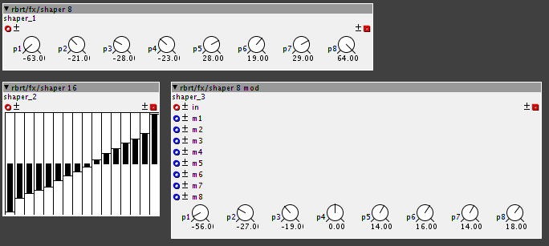
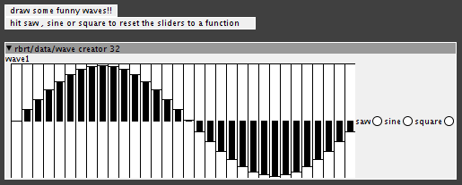

i should expand... the pitch seems to work if you move the parameter continuously, but if you leave it static it goes off.
also, the startpoint does work... my bad.
really enjoying this object btw, lots of potential as a nice sampler

i should expand... the pitch seems to work if you move the parameter continuously, but if you leave it static it goes off.
also, the startpoint does work... my bad.
really enjoying this object btw, lots of potential as a nice sampler
..yeah the concept is nice ,but it doesn't work as it's supposed to...
thanks for pointing this out,e-hem...
something connected to 'speed' is really messed up,I'll fix it ASAP
and let you know...
waveshaping
just did some really quick and dirty lookup-table style waveshaping objects.

nothing fancy,basically just an adaption of existing objects.
I think they're fun anyway,check out the help-patches (especially for 'shaper 8 mod')
HEAVY aliasing,gritty sound.
I'm beginning an effort to document all objects with help - patches.
here's the first, for 'rbrt/fx'.because there's not much there,yet 
more wavetable stuff
here's WAVE CREATOR

to create lofi-32-bit waveforms directly in axoloti UI.
BIG HACK: if you press 'saw' , 'sine' or 'square', the sliders will re-set to the respective waveform!
you can acces the waveform you've created by entering the object's name (in this example, 'wave1' ) into
'table/read interp' or such....
I will post an approach to multi-waveform-wavetables and morphing when I've gotten around some interesting difficulties...
this is really nice! I'm using this now as quantization phasor and transport. the only problem I have is the external input for factor doesn't really work. I divide my smps now with factory objects but its somehting the stransport should do right?
For the rest, really great and useful object!
Heyho!
Is the internal parameter factor working?
I guess its just one line of code I forgot...
I'll check it tomorrow...
The internal one works perfectly well!
btw I'm having a really great time with my looper here, things really start to come together musically 
I was just wondering, I really like the fade option of the lrec object. Would it be possible to add this to the ldub too?
-about 'ktransport' and 'stransport':
...code looks good to me,
the value at the inlet 'factor' is ADDED to the object's parameter 'factor'...
the parameter is set to a minimum of 1 (it has to,everything else would cause problems)
so,if the value at inlet 'factor' is set to 1,the ACTUAL factor is 2.
maybe that was the problem on your side...
anyway,I added a helpfile and just synced.
about 'fade' for ldub:shouldn't be much of a problem to add this.
I'll add this to my agenda for the next issue of the looper-objects,
there will be quite a few fixes and also performance-improvements...
Looking forward to the updates!
And BTW, there is one little behavior of the /ldrive object that drives me crazy... the count outlet is 0 when there's no loop or one is being recorded, and then starts to count from 0 when the loop is running...I've tried some approaches to sync multiple devices with a simple /change object linked to the /ldrive counter, but as for now it only works starting from the second count...would it be possible/easy to change that? Like 0 as a default state and then counting from 1... Thanks
ok that was confusing. I thought that the external factor would be multiplied with the internal. wouldnt that be more logical?
so the best thing would be to set to one and feed it the factor I want -1?
nice, thx a lot!
...hmm still thinking,
I do agree multiplying inlet 'factor' and parameter 'factor' makes sense in this special case,
even if most other objects simply add inlets and parameters...
hmmm...what to do when inlet 'factor' is zero?
maybe ignore zero?
that could work..
Multiplaction would eliminate the need for external patching.
No need for a -1 and you could still use the internal factor to trim the factor up or down to a practical value instead of doing this with objects before the inlet.
May you can tell it to use the internal factor when external inlet = 0.
Hey @rbrt and @valmir I've got a new aproach for midi clock syncing:
I used rbrts sync mechanisms but replaced the phasor with a counter that is being scaled to a range of 0-64:
Loop start is quantized to the next 24ppq loop stop according to rbrt's quantization mechanism.
I don't have all the extra stuff of @valmir's example, still didn't really get most of it, but it seems to work and doesn't produce a lot of clicks as of now.
Maybe I will also change to alway having a clock in my system. Could come handy for stuff like sequencing retrigger of a loop, or mlr like retriggering.
This is the patch:
O Clock Sync New.axp (13.2 KB)
{kind=link}
{kind=link}